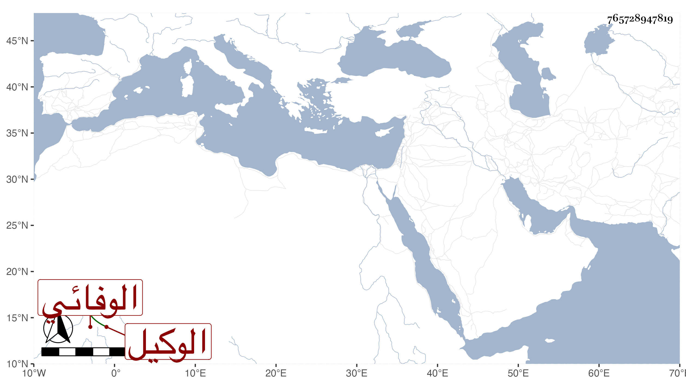

0902Sakhawi.DawLamic.ITO20230111-ara1.EIS1600.765728947819
Biography ID: 765728947819
549
عبد العزيز بن أحمد بن يوسف عز الدين الوفائي الوكيل ويلقب بالفار . ممن عمل الرسلية في باب شيخنا وغيره ثم ترقى للوكالة وبرع فيها وفي الخصومات سيما حين فشو النقص في القضاة وتحول من ذلك وملك الدور وغيرها ، وحج غير مرة وجاور وتكلم هناك في الحسبة وغيرها ، ولا زال يسترسل حتى استقر في نظر الأوقاف عوضا عن ابن العظمة بتقرير شهري ، وركب البغلة وتوسع في الظلم ، ومع ذلك فتجمد عليه مما التزمه الكثير بحيث تكلف في سده لبيع بعض أملاكه ورسم عليه مدة ثم خلص وعاد إلى الوكالة ولكن في حالة دون الأولى بكثير ، ولم يزل في تناقص حتى مات في شوال سنة ست وتسعين ولم يخلف بعده مثله عفا الله عنه .
